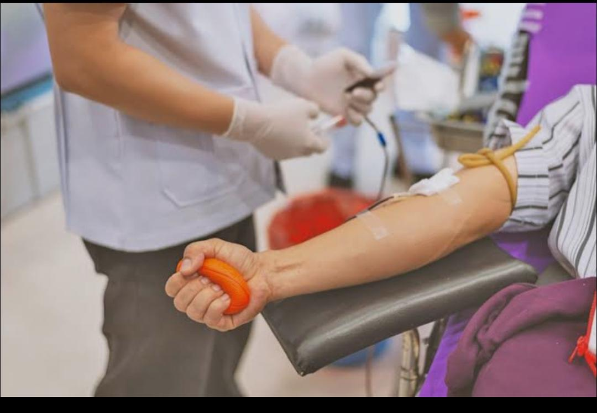
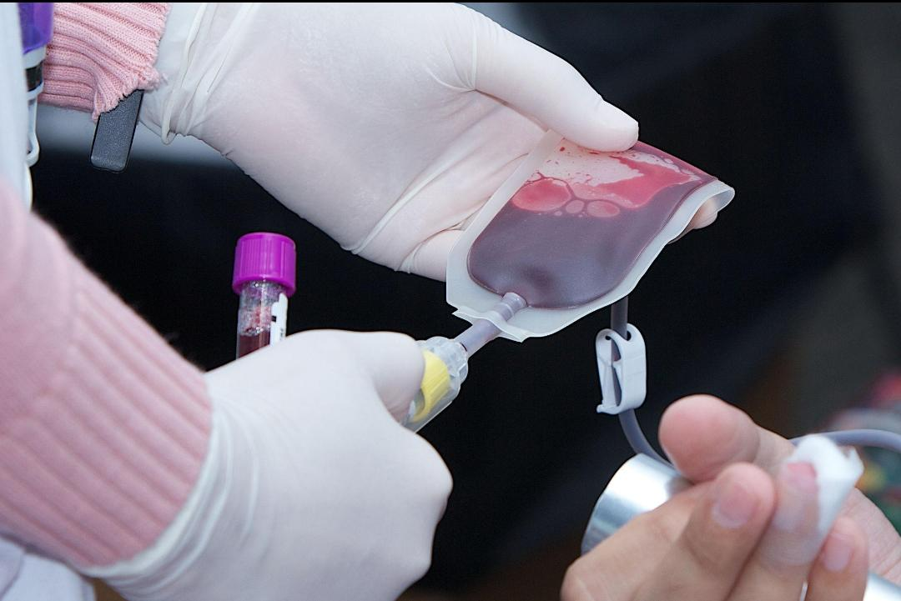
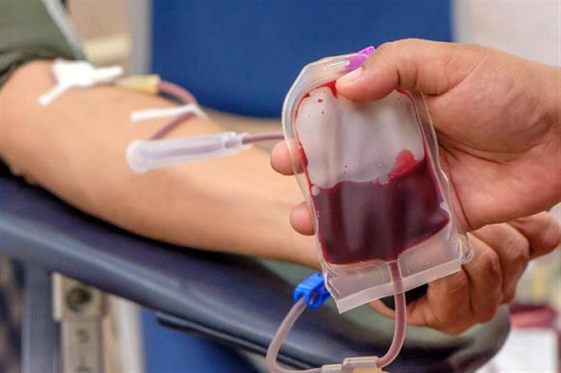
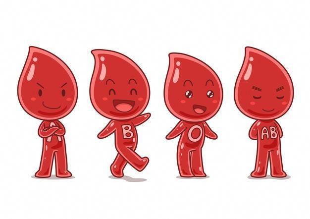

Blood is the miracle that carries the secret of life. It is not just a fluid running through our bodies —
it is a complete healing system. Each part of blood has a specific and essential role in fighting
serious illnesses like anemia, bleeding, cancer, and liver disease.
Donating blood means that
just one drop can turn into a whole new life for someone else.




Based on antigens on the red blood cells surface.
An extra protein that may or may not be present.
When you combine both systems, you get the 8 main types: